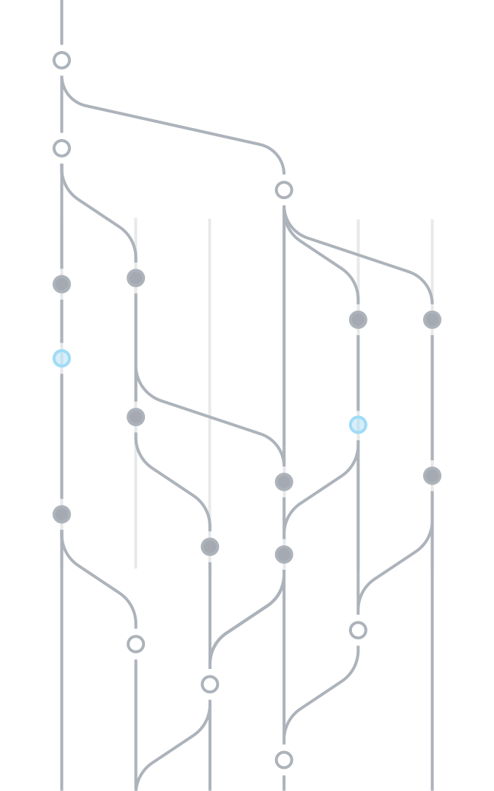
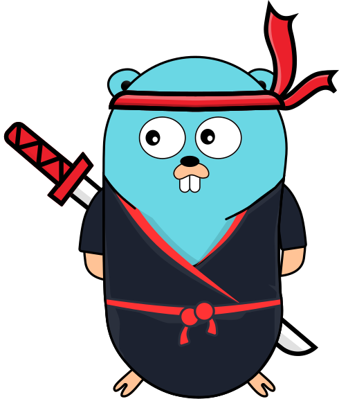

Aryan Mehrotra · Senior Software Engineer @ zop.dev · Maintainer @ gofr.dev
Go Fr
Open Source India 2026
GoFr: An Opinionated Go Framework
For accelerated microservice development
First, the basics
An opinionated Go framework for accelerated microservice development.
One way to write a handler, read config and connect to a datasource. Teams stop debating the wiring.
Tracing, metrics, logs, health checks, auth, pub/sub and 30+ datasources come with one import.
Apache-2.0, built on standard net/http and OpenTelemetry. 20,800+ GitHub stars and 160+ contributors.
GoFr v1.62.0, with a release every two to three weeks
Go Fr
Where we are
75%
Up from 25% in 2024. Sundar Pichai, April 2026.
84%
Stack Overflow Developer Survey 2025, 49,000+ respondents.
53%
Go Developer Survey 2025, published January 2026.
Sources: Semafor, Stack Overflow, go.dev/blog/survey2025
Go Fr
What it costs
56%
No better than a year ago. It compiles almost every time.
5x
Pull requests are 51% larger on high-AI teams.
3x
Against 34% more tasks delivered.
46%
33% trust it. 3% trust it highly.
Sources: Veracode 2026, Faros AI 2026 (22,000 developers), Stack Overflow 2025
Go Fr
The idea
Don't manually wire OpenTelemetry, Prometheus, or structured logging. gofr.New() does it.
Rule 4 of GoFr's guide for AI coding assistants, gofr.dev/AGENTS.md
GoFr v1.62.0
Go Fr
The whole service
func main() {
app := gofr.New()
app.GET("/orders/{id}", getOrder)
app.Run()
}
func getOrder(c *gofr.Context) (any, error) {
var status string
err := c.SQL.QueryRowContext(c,
"SELECT status FROM orders WHERE id=?",
c.PathParam("id")).Scan(&status)
return status, err
}
Traces. OpenTelemetry spans for the request and the query; one env var ships them.
Metrics. Prometheus at /metrics on port 2121.
Logs. JSON lines carrying the trace_id.
Health. /.well-known/health and /.well-known/alive.
Profiling. pprof on the metrics port.
Shutdown. Graceful on SIGTERM, 30 seconds by default.
The same signature serves HTTP, gRPC, GraphQL, WebSocket, cron and CLI
Go Fr
AI inside the service
app.AddLLM(&llm.Client{
Provider: llm.Groq,
Model: "llama-3.3-70b-versatile",
})
func ask(c *gofr.Context) (any, error) {
return c.LLM().Generate(c, prompt)
}
Every call is a span in the request's trace.
Requests and tokens per request are Prometheus metrics.
The model counts toward service health, like the database.
OpenAI, Groq, DeepSeek, Together, Ollama, or your own ai.Model. Chat, stream, embed, tools.
Go Fr
Agents as clients
Any MCP client
app.EnableMCP()
MCP server on 127.0.0.1:8200
Same router, same middleware
Only GET, HEAD, OPTIONS and QUERY routes become tools. Writes are never exposed.
It listens on loopback, on its own port, and you can exclude routes.
Tool calls run through the real router, with the caller's headers forwarded.
MCP is a Linux Foundation project (Agentic AI Foundation) since December 2025
Go Fr
From a real run, 1 of 3
$ curl localhost:8000/inventory/A1
{"data":{"in_stock":12,"sku":"A1"}}
# the service wrote this log line by itself
{"level":"INFO","message":{"trace_id":"e0a84a3b145661fc58637e900157d339", ... "method":"GET",
"uri":"/inventory/A1","response":200,"response_time":109},"gofrVersion":"v1.62.0"}
$ curl localhost:8000/.well-known/health
{"data":{"name":"inventory-service","status":"UP"}}
A trace ID on every request, without a line of tracing code.
Duration and status in a structured log.
A health endpoint that nobody wrote.
Captured output: examples/using-ai on GoFr v1.62.0. "..." marks fields left out.
Go Fr
From a real run, 2 of 3
$ curl localhost:8000/ask --json '{"prompt":"In one short sentence, what is a microservice?"}'
{"data":{"Content":"A microservice is a software application that consists of small, independent
services that can be developed and deployed independently.", ...
"Usage":{"PromptTokens":20,"CompletionTokens":24,"TotalTokens":44, ...},"Model":"gemma3:270m"}}
$ curl -s localhost:2121/metrics | grep app_llm
app_llm_request_count{model="gemma3:270m",operation="generate",provider="ollama",status="success", ...} 1
app_llm_tokens_per_request_sum{... token_type="prompt"} 20
app_llm_tokens_per_request_sum{... token_type="completion"} 24
Token counts come back with the answer: 20 in, 24 out.
The same numbers are Prometheus metrics, ready for an alert.
Labelled by provider and model, so you can see where spend goes.
Captured output. The model ran locally through Ollama, so no API key was needed.
Go Fr
From a real run, 3 of 3
$ curl localhost:8200 --json '{"jsonrpc":"2.0","id":1,"method":"tools/list"}'
{"result":{"tools":[{"name":"get_inventory_sku","description":"GET /inventory/{sku}", ...
"annotations":{"readOnlyHint":true}}]}}
$ curl localhost:8200 --json '{... "method":"tools/call","params":{"name":"get_inventory_sku", ...}}'
{"result":{"content":[{"type":"text","text":"{\"data\":{\"in_stock\":12,\"sku\":\"A1\"}}"}],"isError":false}}
$ curl localhost:8200 --json '{... "method":"tools/call","params":{"name":"post_ask","arguments":{}}}'
{"error":{"code":-32601,"message":"unknown tool"}}
Discovered: the GET route appears as a tool, marked read-only.
Called: the agent gets the same answer curl got.
Refused: the POST route is not a tool, so the call fails.
Captured output from the MCP server that app.EnableMCP() starts on port 8200.
Go Fr
For the company
| Pressure | Without a framework | With GoFr |
|---|---|---|
| Review load | Each generated service is wired its own way | One handler signature for HTTP, gRPC, cron and CLI |
| Incidents | Tracing and health checks added after the outage | Traces, metrics, logs and health from gofr.New() |
| AI spend | Token use is invisible until the invoice | Tokens per request is a metric from the first call |
| Integrations | A different client and setup per store | 30+ datasources and brokers through one context |
| Lock-in | A vendor SDK in every service | Apache-2.0, standard net/http, OpenTelemetry |
20,800+ GitHub stars, 160+ contributors, a release every two to three weeks
Go Fr
The takeaway
HTTP, gRPC, GraphQL, WebSocket, cron jobs, CLI apps, CRUD from a struct
MySQL, Postgres, SQLite, Redis, Mongo, Cassandra, ClickHouse and more, with migrations
Kafka, NATS, Google Pub/Sub, MQTT, SQS, Event Hubs, Redis
Local disk, S3, GCS, Azure, FTP and SFTP behind one file API
Traces, metrics, JSON logs, health endpoints, pprof, live log-level change
Basic auth, API keys, OAuth with JWT, RBAC, rate limiting, CORS
HTTP client with circuit breaker, retry, rate limit and health checks
LLM datasource, streaming, embeddings, tool calls, MCP server
Also: graceful shutdown, Swagger UI, test mocks. All in GoFr v1.62.0, Apache-2.0.
Go Fr
Start tonight
gofr.dev: docs and quick start
github.com/gofr-dev/gofr: the code, Apache-2.0
gofr.dev/AGENTS.md: hand this to your coding assistant
Connect on LinkedIn
Open gofr.dev
Aryan Mehrotra · x.com/_aryanmehrotra
Go Fr
Open Source India 2026